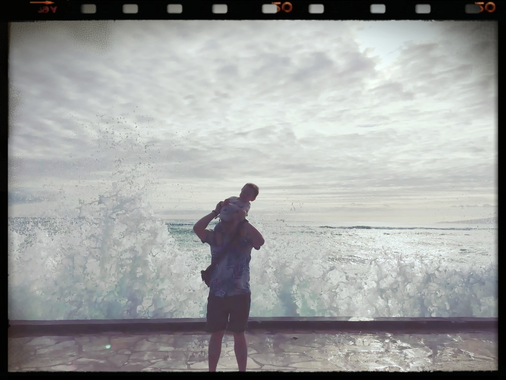

About/關於

I am now working as an assitant professor at Aichi Medical University. You can find the home page of the department I belong to. I got my PhD from the Department of Public Health, Graduate School of Medicine, Nagoya University at 2016. So currently I live in central Japan. I am a big fan of R and the open-source integrated development environment (IDE) R studio as well as many other open-source softwares. But I am only a fan, not an expert. Our lab is now mainly working on Epidemiology of Gastroenterological Cancer, as well as psycological genetic epidemiology especially about sleep duration, autism, and attention deficit hyperactivity disorder (ADHD). This site will be the place to hold the materials I personally have used during the lectures, or any other thoughts that come across my mind. You can find my cv here.
這裏是王超辰的個人網站。2016年3月底我終於取得日本名古屋大学的醫學博士學位，我的研究方向是慢性疾病的流行病學研究, 這是我的個人簡歷。我目前在日本愛知医科大学医学部公衆衛生学教室做助教。如果你不能打開左邊的鏈接，說明你生活在東土大唐GFW淪陷區內，請學會(肉身)翻牆訪問我們研究室的主頁。2010年至2015年期間在名古屋大學，我的研究內容是肥胖和糖尿病等生活習慣病相關的流行病學研究，當年參加的隊列研究至今仍然在追蹤之中。我的博士畢業論文探討的是该隊列中追蹤對象2型糖尿病的發病，與研究對象的父母親糖尿病史，以及本人的體重變化的关系。我的碩士論文討論的是血清C-反應蛋白濃度和追蹤中2型糖尿病發病的關系。在愛知医科大学我们研究室的研究主題包括消化道癌症（特别是胃癌，食管癌，膽囊癌）的流行病學研究（醫院內病例對照研究）。這一類消化道癌症據說與 H.Pylori，也就是幽門螺旋杆菌的感染高度相關。我們還有另外一個剛起步的研究精神醫學表觀症狀的基因隊列研究GCOP Study (Genome Cohort on Psychosocial traits Study)，此研究主要由副教授西山毅(Takeshi Nishiyama)負責，我也輔助進行一些數據分析和論文的寫作。 我支持開源軟件，工作，生活和學習中主要在Ubuntu，及Rstudio環境下進行，堅持一邊學習，一邊使用R分析數據。平时業餘愛好是折騰折騰电脑，讀讀經濟學人/the Economist,智商平庸，痛恨GFW，每次回中國大陸超过一周時間就會渾身不適，惡心嘔吐等被牆症狀，每日19点症狀最爲嚴重。這是我第二次嘗試利用github+hugo託管個人網站，感謝開源社區的人們，你們才是人類進步的階梯。
Address/聯絡方式:
1-1 Yazakokarimata, Nagakute, Aichi, 480-1195, JAPAN
〒480-1195 愛知県長久手市岩作雁又1-1
Phone: 0561-62-3311（内線/ext.：12389）
Fax: 0561-62-5270
E-mail: abelardccwang<at>gmail.com